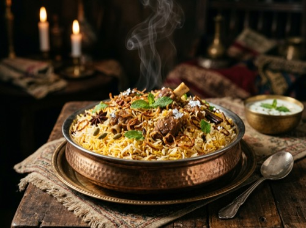
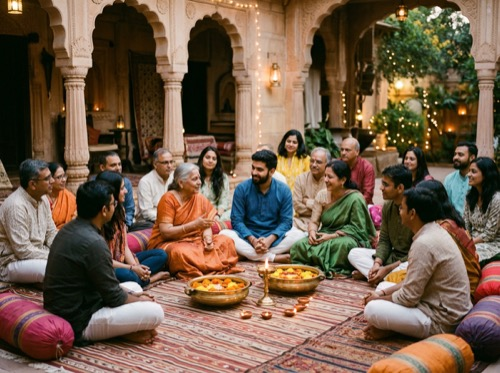
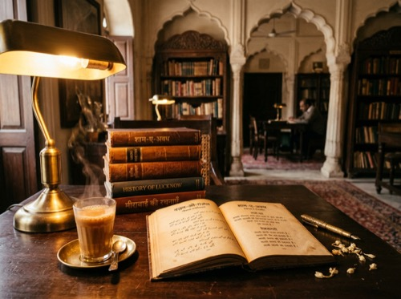
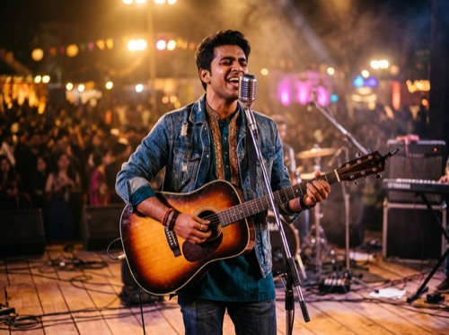
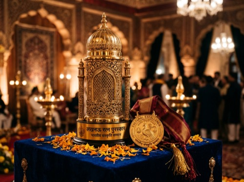
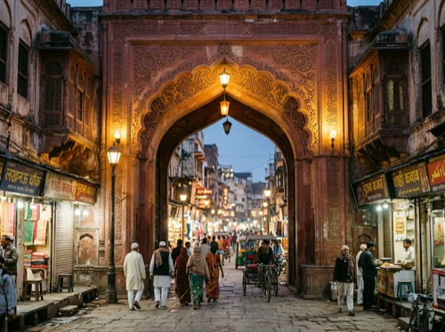

01
01Mehfil-e-Shaam
Live music, ghazals, classical performances, folk music, qawwali and contemporary musical expressions.
Grand
Shaam-e-Awadh
Lucknow


Ek Shaam, Awadh Ke Naam.
A celebration of Lucknow's culture, poetry, music, food, stories and tehzeeb.
16–17 January 2027 | Lucknow
A Times Internet Languages Live Initiative
About the festival
Some cities are remembered for their monuments. Lucknow is remembered for the way it makes you feel.
In its poetry, its language, its food, its music, its craftsmanship and its people lies a culture that has travelled through generations.
Shaam-e-Awadh is an invitation to experience this living heritage, bringing together the voices, artists, storytellers, thinkers and creators who make Lucknow what it is.
From timeless poetry to contemporary music, from traditional crafts to emerging talent, this is a celebration of everything that makes Awadh extraordinary.

Explore the festival
01Live music, ghazals, classical performances, folk music, qawwali and contemporary musical expressions.
 02
02Stories of the city, its people, architecture, forgotten histories, traditions and changing identity.

03A celebration of Awadhi cuisine, local food traditions, legendary recipes and the people behind Lucknow's food culture.
 04
04Chikankari, crafts, traditional skills, artisans, designers and contemporary interpretations of Awadhi craftsmanship.

05Conversations celebrating inclusion, identity, representation, dignity and the experiences of diverse communities.

06A gathering of writers, poets, academics and readers. Conversations on Hindi, Urdu and Awadhi literature, books, ideas, society and the written word.

07A platform for young musicians, poets, performers, storytellers and creators from Lucknow and the wider region.

08Recognising people whose contributions have enriched Lucknow's cultural, intellectual, artistic and social life.
Artists and speakers
Confirmed artists, poets, speakers and special guests will join this page as they are announced.
Music and qawwali
Poetry and literature
Food and craft
Conversations and special guests
Each profile will carry a photograph, name, area of work, a short biography and session or performance details.
The programme
An introduction to the festival's theme, Lucknow's heritage, and the formal opening.
Regional artistic traditions of Awadh and the practitioners who carry them.
Heritage, neighbourhoods and city stories.
A stage performance from the classical and theatre traditions.
A conversation on heritage, hospitality and the visitor economy.
Poetry and stories in Hindi, Urdu and Awadhi.
The first day's performances from the 20 selected performers.
Honouring people who have enriched Lucknow.
The first evening closes with Sufi and qawwali.
The second day opens, with a first look at places to explore in Lucknow.
Folk and contemporary sounds on one stage.
How a younger generation sees the city's changing identity.
Crafts, cuisine, hospitality and local enterprise.
Theatre, dance or a contemporary cultural performance.
Old and new ways of telling a poem or a story.
The second day's performances from the 20 selected performers.
The second part of the honours.
The festival closes.
Dishes, techniques and food traditions explained.
Meet the makers and see their process and craft heritage up close.
No sessions in this category on this day. Try another day or category.
Timings are indicative and may change with permitted hours and sound conditions. Artists and speakers are announced only once confirmed. Gates open around noon.
The city of Awadh
Short stories about the city, useful whether or not you come to the festival.
Did you know?
Lucknow's clock tower is counted among the tallest in India, and looks its best in the evening light.

Stories of old Lucknow
Its chandeliers earned the Chhota Imambara the name ‘Palace of Lights’. The lanes around it are old Lucknow's pulse.
Did you know?
Built in the 1780s under Nawab Asaf-ud-Daula, this gateway is often taken as the emblem of Lucknow.
Stories of old Lucknow
Begun in 1784 as a famine-relief project that gave work to thousands. Its central hall stands without pillars.
The language of Lucknow
Letting the other person go first has become shorthand for Lucknow's tehzeeb.
Hazratganj and the Gomti
Hazratganj's bustle and the evenings on the Gomti riverfront show the city's present face.
Food and craft experience

About 20 food stalls

About 55 craft stalls
Stall counts are approximate and subject to the measured layout and approvals.
Lucknow Ratna Samman
It recognises people, institutions and enterprises that have enriched Lucknow's cultural, intellectual, artistic and social life. Presented on the main stage on both evenings.
Chosen by the jury for exceptional contribution. No participation fee.
Presented with vetted partners as “Presented by”, and judged by the same jury.
Every category is evaluated by an independent jury of domain experts.
Nomination, evaluation, shortlisting and selection criteria will be documented and published. Awardees are chosen on merit, impact, innovation, consistency and contribution to Lucknow.
Nomination details and awardee profiles will be published here after the jury decides.
Partners and sponsors
Visit the festival
₹799
Saturday 16 or Sunday 17 January, noon to night.
₹999
Both days. ₹599 less than two single passes.
16 and 17 January 2027, about noon to 10 p.m., within permitted timings.
Lucknow, Uttar Pradesh. The full address and a Google Map will be added here once the venue is confirmed.
First aid, drinking water, sanitation and controlled entry are planned. Accessible routes depend on the site. Details follow once the venue is confirmed.
On 16 and 17 January 2027 in Lucknow. Gates open around noon and the site closes by 10 p.m., subject to the timings and sound conditions the authorities permit.
A one-day pass costs ₹799 and a two-day pass costs ₹999. Every visitor needs a ticket, including Open Mic performers.
In Lucknow, Uttar Pradesh. The venue and full address will be published here once confirmed.
Apply through the Shaam-e-Awadh website with a short video, audio sample, poem or performance idea. The team selects 20 performers across poetry, music, comedy and storytelling, dance and theatre, and splits them between the two days. Selected performers get a main-stage slot and a performer pass, and still buy an entry ticket.
The Lucknow Ratna Samman is a set of 40 honours for people, institutions and enterprises that have enriched Lucknow, presented on the main stage. Fifteen are chosen by a jury with no participation fee; twenty-five are category awards presented with partners. An independent jury evaluates every category on merit, impact, innovation, consistency and contribution to Lucknow.
The Awadhi food court has about 20 food stalls and the craft and heritage exhibition about 55 stalls for Chikankari, zardozi, textiles and handicrafts. Stall counts are approximate and subject to the approved layout.